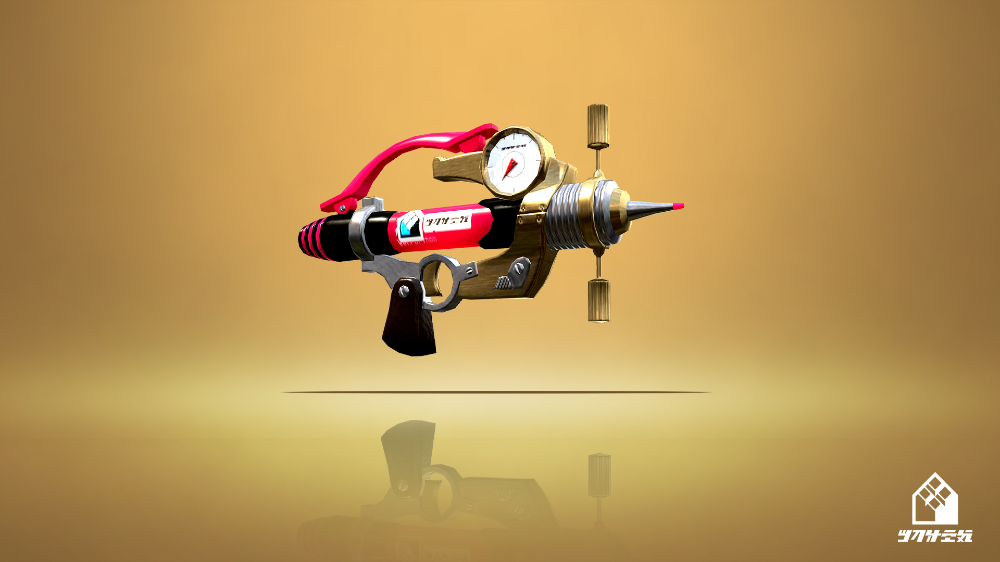

玩《Splatoon 2》这款游戏快有一年半了，也快 1000 小时了。在其中的数十款武器中，渐渐地有了那么几把常用的武器。这篇文章就写一点我自己对这些武器的使用感受。
无印中刷
无印中刷 (图片来自 Splatoon Wiki)
这把武器是带我进入 X 段的武器。我对这把武器的打法是最经典也最粗暴的打法：冰壶隐游偷袭。
不得不说，冰壶对中刷太重要了。中刷只要能接近敌人到射程范围内，那么就有 99.9% 的机率一个横拍秒杀对面。同时，借助冰壶，靠近高台，从而一个跳横拍击杀站在高台上的后排武器或者偷袭刚刚复活的敌人，真是百试不厌。而其它刷子的话，重刷前摇太长，敌人可能及时发现并逃跑或反杀；碳刷伤害低，横拍并不一定能拍死，竖拍需要较高的准度和预判，不如横拍击杀范围大。对于其它具有冰壶的武器，比如金双，不具备躲在高台下击杀敌人的能力，而且也不是一确武器，需要四发子弹才能带走敌人。
虽然套路简单，但反套路也简单。因为冰壶太过明显，所以如果看见对面一个冰壶划过来了，那么对着冰壶的轨迹开几枪，十有八九能发现一个潜行于其中的中刷。这时，如果射程够长，将其反杀也是很简单的。既然冰壶那么明显，如果不靠冰壶呢？那么，这就需要优秀的地板环境，也就是场地上有足够多的己方墨水。一般情况下，场地上有足够多的己方墨水的话，那就是顺风局了。在顺风局下，中刷四处潜行，偷袭敌人，乘其不备，让顺风局更加顺风。但是反之，逆风局，也就是地板坏境很差的情况下，那就是另一番景象了。
玩家间有这么一句对中刷的评价：“顺风成神，逆风成鬼”。因为逆风下，墨水环境很差，很难靠近对方的敌人偷袭（除非对面送上来）。丢一个冰壶等于直接暴露了中刷的位置。所以，中刷如何在逆风局下打开局面，是一个非常值得研究的话题。
另外，冰壶中刷的另一个问题是大招。砸地这个大招在低分段挺有用的，但到了高分段，真是人见人打，难怪这个大招又被称为 “自曝开关”（流泪）。这里放一个网友做的砸地被击杀的集锦：link。
我感觉很难受的一点是薛定谔的一确距离，因为中刷的墨水打出去是一片。而这些墨水的伤害不是固定值，越远的伤害越低。因为最近的距离是能一拍子击杀敌人的，所以从最近到最远就会有一个分界点，超过分界点就不能够一拍子击杀敌人了。而游戏里，是不可能提示这个距离的，所以这个距离要自己把控。这个需要非常好的判断，不然容易出现我觉得能击杀敌人的距离实际却并不能。因为如果不能一拍子击杀的话，就很有可能会被反杀。再加上，如果技能里有主强的话，那么这个距离又会有微小的变动，需要重新训练手感。所以判断一确的击杀距离，是每个中刷的必修课。
贴牌针管
贴牌针管 (图片来自 Splatoon Wiki)
这把武器是通过 这个视频 看到的，因为拿这把武器练习，所以也在比赛中使用了。这把武器一个特点是没有偏移！这一点非常重要，其它小枪，多多少少是有偏移的，也就是说在跳跃，或者长时间射击的话，子弹就会有概率偏离准心。但这把没有，所以如果如这把枪和对面对枪输了，我就不能找借口说：“是我运气不好，子弹偏移了，不然我肯定反杀了”。所以，用了这把枪，打不中就是打不中，没有借口。
这把武器可能是我使用时间最长的武器，这把武器比较能涂地，虽然不是最能涂的，但绝对是很能涂的一类了。涂地能帮助队友攒大招，巩固地板环境，将阵线前移等。别忘了，这个游戏的本质，很大程度上是涂地游戏。如果己方涂不了地，而对方很能涂地的话，那么己方很可能走位受限，被压倒家门口。
如果这把武器配上 2.4 的主强，那么还能做到伪三确 ———— 三枪能造成 99.9 的伤害。如果对方踩到己方墨水，或者血量稍有不满，就会被三枪带走，而不是原来所需的四枪。这在实战中，非常有用，因为实战中，对手，尤其是前排，保持满血是有点困难的：一方面，雨，水枪等大招多少带来一点伤害；其次，各种副武器的暴风伤害也是常有的事；再者，对于经常在敌方墨水上漂的双枪，更是非常容易踩上敌方墨水受伤。
贴牌针管的副武器是水球，实战中可以先用水球限制一下对方走位，还能造成点伤害，非常管用。
但一个小问题是，这把武器的射程不是很长。环境主流武器，比如精英枪，红双，射程都比它长，所以这就比较考验走位和如何靠近的问题。因此，也有一些玩家会给针管配上隐游，比如 Hanjou 的这一期，
ツトッキー 的这一期。不过毕竟精英枪和红双的定位也可以是中排，所以拿中排和前排比也不是很公平。和其它前排的话，比如喇叭，牙刷，那射程其实也能接受。毕竟，已经是小枪了，游速和走速都已经有加成了，而且涂地能力也不错，副武器和大招也挺实用，再加上已经没有弹道偏移了，如果要是在给它增加射程的话，这绝对会是 imba 的武器。所以，为了平衡性，只能限制射程了，就像圆珠笔这武器就因为太强而被官方缩短了射程。
黑白开尔文
黑白开尔文 (图片来自 Splatoon Wiki)
也叫开尔文别注，黑白 525.
好看！这是这把武器给我的第一印象。这也是我使用这把武器的原因。
这把武器有着和红双类似的定位。与红双相比，射程相近，但攻击力大多了，一枪有 52.5，可以两枪击杀敌人，是它相比于红双的优势。但劣势也非常明显，如果不翻滚，攻击力就没有 52.5，需要 3 枪才能击杀敌人，而且翻滚前的弹道偏移比翻滚后大很多，而红双即使不翻滚，也能有较好的准心。其次，它的涂地性能很弱，属于不能指望它来涂地的那种，而红双虽然也不算优秀，但相比黑白开尔文可好太多了。另外，虽然翻滚也带来一定的灵活性，但连续翻滚后的硬直也比红双大多了，连续翻滚后很可能被敌方趁机击杀。再者，翻滚前的射击时，走速也是很慢的，对枪上不占优。
但尽管如此，4 格的射程已经很不错了，超过所有小枪了，而且两枪即可带走对面，非常优秀了。也是双枪中唯一可以做到如下操作的：第一次翻滚击中第一枪，如果对面没有发现，直接第二枪，带走敌人，如果敌人发现，第二次翻滚，打中第二发，带走敌人。其它双枪都要三枪或四枪，所以很难实现这样的操作。
扔出碳酸炸弹之后的墨水
副武器和大招也很实用。副武器的碳酸炸弹虽然伤害不及三角雷和粘弹，但可投掷的距离较长，而且在投掷过程中也会留下墨水，这简直是另一种意义上的冰壶，可以在必要时开路，方便突进和逃跑。而且碳酸炸弹耗墨量相对较低，搭配副武器省墨技能，可以实现连续扔两个碳酸炸弹。这在很大程度上弥补了黑白开尔文不能涂地的缺点。大招的墨甲也是非常实用，在必要时为队友和自己提供保护。
另外，开尔文也有另外两把，一把蓝开尔文和一把黄开尔文。对于蓝开尔文，我不是很熟悉；对于黄开尔文，可以参考 ティラミス.
总结
这是目前我用的比较多的武器，其它武器用得挺少的，如果以后再尝试其它武器的话，再另外写一篇记录和分享吧
Links
- Splatoon Wiki
- ティラミスちゃんねる
- Boo★冬瓜: 刚开始玩的时候看了很多这位 UP 主的教程
- 【Oct】[Splatoon2] 完全向中刷新手进阶教程: 中刷启蒙